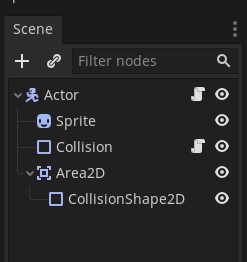
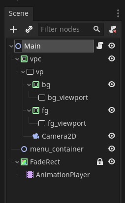
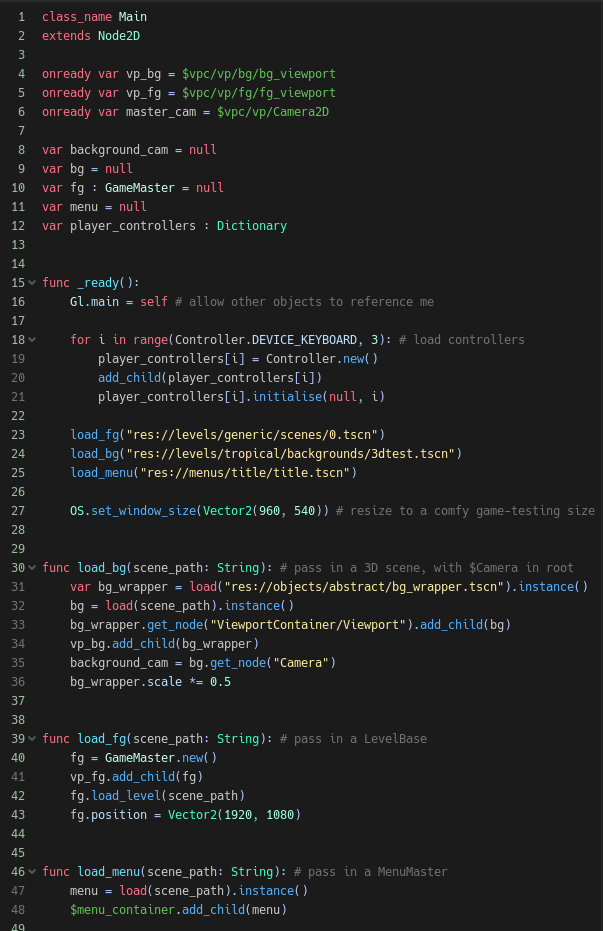
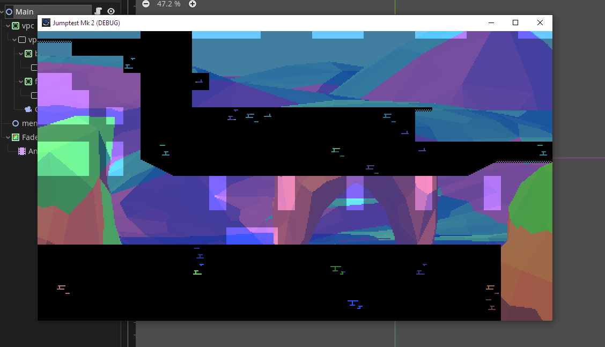

You've probably seen my entry to the GMTK Game Jam, "The Too-Helpful Knight". It's the culmination of my practice with gamedev so far, and this post discusses how I'm building upon it for future use.
Specifically, I'm going to start work on an "engine" or "framework" from the ground up, future-proofing the structure of the game and making it robust enough to be used in subsequent projects. I'm going to document some of the progress in occasional blog posts, without giving away any specifics about my next project.
First order of business: the macro-level structure of how the game's scenes are set up. Setting this up wisely will allow easy loading and unloading of different game elements. For example, in the jam game, I used this concept to separate the game's menus (title, pause, etc) and the actual gameplay.
In Godot (the engine I'm using - an alternative to Unity, Gamemaker, etc), objects are called "nodes", and are organized in a hierarchy or tree. It's kind of like a group of folders on a computer; in the same way that folders can contain each other, nodes can be parents or children of one another.
A group of nodes can be saved as a Scene for later use, bundling them all together into a nice package that you can reuse over and over. The above image shows the Actor scene used in the jam game. The root node (renamed "Actor") is a physics object, and then as children, it has a Sprite to display the character's graphics, a Collision box to define the rectangle where it can run into walls, and so on.
This is the "Main" scene for the game so far - the "top level" scene that contains everything else. It might seem complex, but each of these is just an "area" for different types of game objects to be loaded. The "fg" and "bg" sections are for 2D foreground visuals and 3D background visuals, for example, and there's also a "menu_container" to render UI or title screens. FadeRect is responsible for fading the screen in and out during transitions, and the fade timing is controlled by its AnimationPlayer.
The nodes with green and white rectangles as their icons are ViewportContainers and Viewports, which mean that they act as "screens within screens", rendering their contents separately from everything else. They then get stacked on top of each other when the final game is rendered, kind of like layers in Photoshop or Premiere. This allows for fine control over things like the resolution of certain game elements (e.g. lowering the resolution on part of the game for a low-res effect), as well as combining 2D and 3D visuals. The Camera2D captures both the "fg" and "bg" viewports, so that they can be seen by the final game screen.
Above is the code run by the Main node, at the root of the Main scene - it's the code responsible for loading things into the "slots" for foreground, background, and menu. In a proper game, there will be logic to load different scenes depending on which level is selected, and so on. For example, the jam game uses (very messy) code to load each menu or level in order.
Aside from that, there's also code here to initialise all of the controllers (for keyboard / different controller ports), and a temporary window resize to make the window smaller while I develop the engine.
And here it is ingame! ...Nothing is actually *in* the game yet, so it's not much to behold. However, you can see that the foreground and background both loaded successfully.
That's it for today, take care.